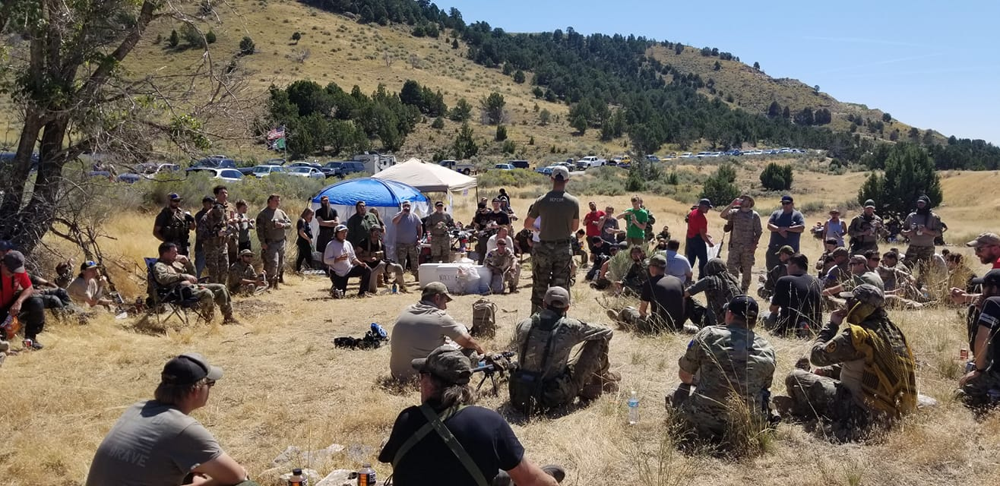

Operation: Abolitionist
When I started my Airsoft Team, Black Angels Recon, we became aware of a non-profit organization Operation Underground Railroad(OUR). Operation Underground Railroad helps rescue and rehabilitate children who have become victims of human trafficking. They operate all over the world and educated us on how prevalent human trafficking is in Utah and surrounding states. We decided to run a charity Airsoft event called Operation: Abolitionist where 100% of the proceeds go to Operation Underground Railroad. These events took hundreds of our personal dollars to put together, we worked with local businesses to help sponsor the events and donate to the raffle and utilized social media and the website I built to market the event and sell tickets online. Since 2014 we raised $1,000, $1,400, $1,700, $3,886, $5,010 and $6,290 respectively each year with our largest event having over 250 people! Each year we had a guest speaker that would help educate everyone on what happens, how to protect themselves and their loved ones and ways they can get further involved in helping end human trafficking. Below is a picture from our latest event:
